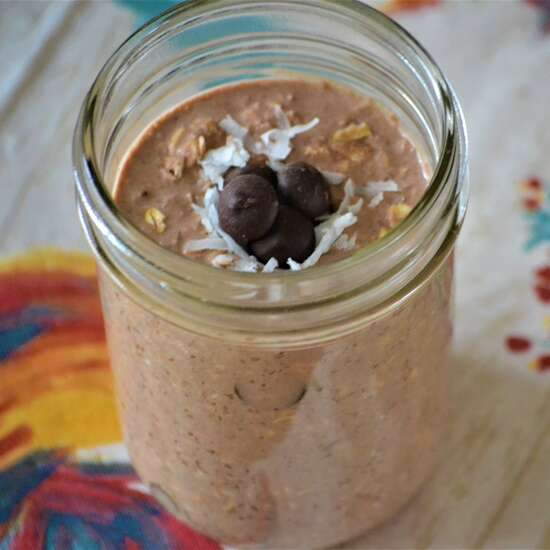

Chocolate Coconut Overnight Oats

Description
A yummy breakfast that is healthy but doesn't leave you feeling deprived,
this no-cook oatmeal will be creamy by the morning time and makes breakfast prep time non-existent.
Put all ingredients in a 12-ounce mason jar and vigorously shake to make preparation a breeze!
ingredients
- 1 cup chocolate-flavored almond milk
- ¾ cup old-fashioned rolled oats (such a Quaker®)
- 1 tablespoon chia seeds
- 1 tablespoon packed shredded sweetened coconut
- 1 tablespoon maple syrup
- 1 tablespoon unsweetened cocoa powder
- 1 splash vanilla extract
Steps
- Mix dry ingredients (Oats, Chia Seeds, Cocounut and Cocoa Powder) into a 12-ounce mason jar
- Add wet ingredients (Maple Syrup, Vanilla Extract and Almond Milk) to the jar and mix well
- Leave in the fridge overnight (or aprox 8 hours)
- Stir again and serve cold